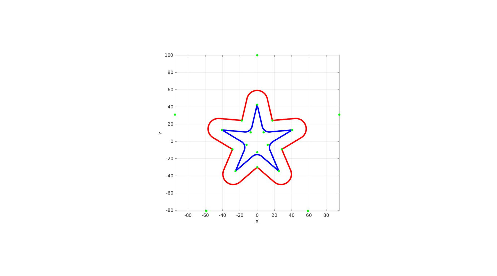
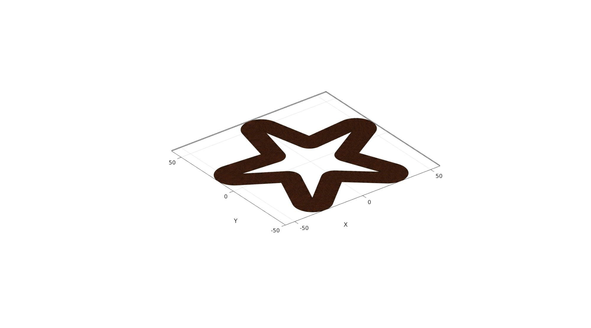
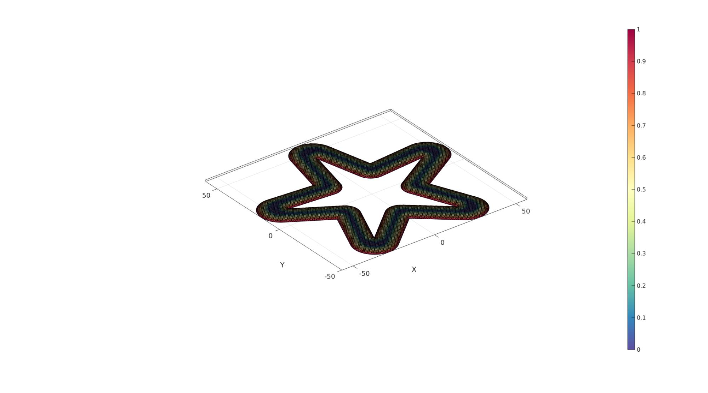
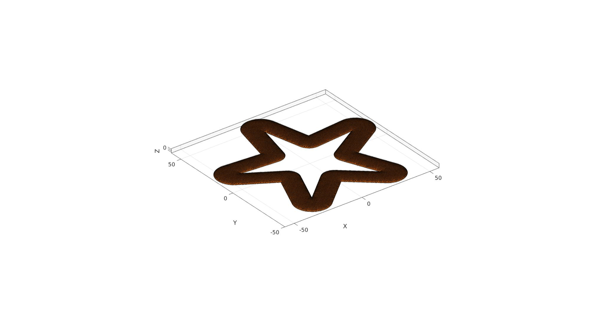
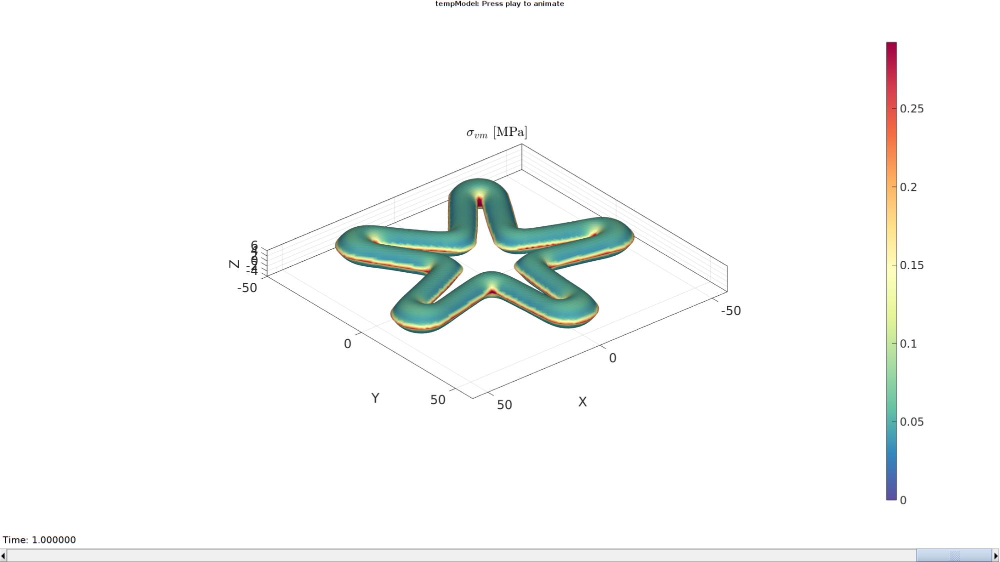

Contents
% DEMO_febio_0085_soft_robotic_star_01.m % Below is a demonstration for: % % * Building geometry for a thin sheet kresling structure % * Define the sheet as shell elements % * Defining the boundary conditions % * Coding the febio structure % * Running the model % * Importing and visualizing the results
Keywords
- febio_spec version 4.0
- febio, FEBio
- kresling
- displacement control, displacement boundary condition
- shell elements, tri3
- static, solid
- hyperelastic, Ogden
clear; close all; clc;
Plot settings
fontSize=20; faceAlpha1=0.8; %transparency markerSize=40; %For plotted points markerSize2=10; %For nodes on patches lineWidth1=1; %For meshes lineWidth2=2; %For boundary edges cMap=spectral(250); %colormap
Control parameters
%Geometry parameters layerThickness=0.5; starRadiusOuter=100; starRadiusInner=30; starStripThickness=13; starNumSpike=5; filletRadiusPeakOuter=12; filletRadiusValleyOuter=0; filletRadiusPeakInner=0; filletRadiusValleyInner=8; starBellyHeight=1; %Mesh parameters pointSpacing=1; appliedPressure=5e-3; %Material parameter set E_youngs1=1; %Material Young's modulus nu1=0.3; %Material Poisson's ratio % FEA control settings numTimeSteps=12; %Number of time steps desired max_refs=25; %Max reforms max_ups=0; %Set to zero to use full-Newton iterations opt_iter=6; %Optimum number of iterations max_retries=5; %Maximum number of retires dtmin=(1/numTimeSteps)/100; %Minimum time step size dtmax=(1/numTimeSteps); %Maximum time step size runMode='external'; % Path names defaultFolder = fileparts(fileparts(mfilename('fullpath'))); savePath=fullfile(defaultFolder,'data','temp'); % Defining file names febioFebFileNamePart='tempModel'; febioFebFileName=fullfile(savePath,[febioFebFileNamePart,'.feb']); %FEB file name febioLogFileName=[febioFebFileNamePart,'.txt']; %FEBio log file name febioLogFileName_disp=[febioFebFileNamePart,'_disp_out.txt']; %Log file name for exporting displacement febioLogFileName_stress_prin=[febioFebFileNamePart,'_stress_prin_out.txt']; %Log file name for exporting principal stress febioLogFileName_force=[febioFebFileNamePart,'_force_out.txt']; %Log file name for exporting force
Creating boundary curves
a=(2*pi)/starNumSpike; d=starRadiusInner.*cos(a/2); h=2*starRadiusInner.*sin(a/2); b=2*atan((h/2)./(starRadiusOuter-d)); s=starStripThickness./sin(b/2); g=pi/2-b/2-a/2; s2=starStripThickness./cos(g); [V1,V1_raw]=makeStar(starNumSpike,starRadiusInner,starRadiusOuter,filletRadiusValleyOuter,filletRadiusPeakOuter,pointSpacing); [V2,V2_raw]=makeStar(starNumSpike,starRadiusInner-s2,starRadiusOuter-s,filletRadiusValleyInner,filletRadiusPeakInner,pointSpacing);
cFigure; hold on; plotV(V1,'r.-','MarkerSize',15,'LineWidth',2); plotV(V2,'b.-','MarkerSize',15,'LineWidth',2); plotV(V1_raw,'g.','MarkerSize',25) plotV(V2_raw,'g.','MarkerSize',25) axisGeom; view(2); gdrawnow;
Meshing the region
%Defining a region regionCell={V1,V2}; %A region between V1 and V2 (V2 forms a hole inside V1) [F,V]=regionTriMesh2D(regionCell,pointSpacing,0,0);
cFigure; hold on; hp=gpatch(F,V,'o'); patchNormPlot(F,V); axisGeom; camlight headlight; gdrawnow;
Define "belly"
V(:,3)=0; Eb=patchBoundary(F); indBoundary=unique(Eb(:)); D=meshDistMarch(F,V,indBoundary); D=D./(starStripThickness/2); D(D>1)=1; bellyType='circular'; switch bellyType case 'linear' V(:,3)=V(:,3)+D.*starBellyHeight; case 'circular' D=abs(D-1); %Invert so height at boundaries. a=acos(D); % Use D as "x" coord in unit circle to derive angle alpha V(:,3)=starBellyHeight.*sin(a); end
cFigure; hold on; hp=gpatch(F,V,D); hp.FaceColor='interp'; % patchNormPlot(F,V); axisGeom; camlight headlight; colormap(spectral(250)); colorbar; gdrawnow;
Mirrowr/copy and merge
V2=V;
V2(:,3)=-V2(:,3);
[F,V,C]=joinElementSets({F,fliplr(F)},{V;V2});
[F,V]=mergeVertices(F,V);
cFigure; hold on; gpatch(F,V,'o'); patchNormPlot(F,V); axisGeom; camlight headlight; gdrawnow;
Defining the FEBio input structure
See also febioStructTemplate and febioStruct2xml and the FEBio user manual.
%Get a template with default settings [febio_spec]=febioStructTemplate; %febio_spec version febio_spec.ATTR.version='4.0'; %Module section febio_spec.Module.ATTR.type='solid'; %Control section febio_spec.Control.analysis='STATIC'; febio_spec.Control.time_steps=numTimeSteps; febio_spec.Control.step_size=1/numTimeSteps; febio_spec.Control.solver.max_refs=max_refs; febio_spec.Control.solver.qn_method.max_ups=max_ups; febio_spec.Control.time_stepper.dtmin=dtmin; febio_spec.Control.time_stepper.dtmax=dtmax; febio_spec.Control.time_stepper.max_retries=max_retries; febio_spec.Control.time_stepper.opt_iter=opt_iter; %Material section materialName1='Material1'; febio_spec.Material.material{1}.ATTR.name=materialName1; febio_spec.Material.material{1}.ATTR.type='neo-Hookean'; febio_spec.Material.material{1}.ATTR.id=1; febio_spec.Material.material{1}.E=E_youngs1; febio_spec.Material.material{1}.v=nu1; % Mesh section % -> Nodes %%Area of interest febio_spec.Mesh.Nodes{1}.ATTR.name='Object1'; %The node set name febio_spec.Mesh.Nodes{1}.node.ATTR.id=(1:size(V,1))'; %The node id's febio_spec.Mesh.Nodes{1}.node.VAL=V; %The nodel coordinates % -> Elements partName1='Part1'; febio_spec.Mesh.Elements{1}.ATTR.name=partName1; %Name of this part febio_spec.Mesh.Elements{1}.ATTR.type='tri3'; %Element type febio_spec.Mesh.Elements{1}.elem.ATTR.id=(1:1:size(F,1))'; %Element id's febio_spec.Mesh.Elements{1}.elem.VAL=F; %The element matrix % -> Surfaces surfaceName1='LoadedSurface'; febio_spec.Mesh.Surface{1}.ATTR.name=surfaceName1; febio_spec.Mesh.Surface{1}.tri3.ATTR.id=(1:1:size(F,1))'; febio_spec.Mesh.Surface{1}.tri3.VAL=fliplr(F); %MeshDomains section febio_spec.MeshDomains.ShellDomain{1}.ATTR.name=partName1; febio_spec.MeshDomains.ShellDomain{1}.ATTR.mat=materialName1; febio_spec.MeshDomains.ShellDomain{1}.shell_thickness=layerThickness; %Loads section % -> Surface load febio_spec.Loads.surface_load{1}.ATTR.type='pressure'; febio_spec.Loads.surface_load{1}.ATTR.surface=surfaceName1; febio_spec.Loads.surface_load{1}.pressure.ATTR.lc=1; febio_spec.Loads.surface_load{1}.pressure.VAL=appliedPressure; febio_spec.Loads.surface_load{1}.symmetric_stiffness=1; %LoadData section % -> load_controller febio_spec.LoadData.load_controller{1}.ATTR.name='LC_1'; febio_spec.LoadData.load_controller{1}.ATTR.id=1; febio_spec.LoadData.load_controller{1}.ATTR.type='loadcurve'; febio_spec.LoadData.load_controller{1}.interpolate='LINEAR'; %febio_spec.LoadData.load_controller{1}.extend='CONSTANT'; febio_spec.LoadData.load_controller{1}.points.pt.VAL=[0 0; 1 1]; %Output section % -> log file febio_spec.Output.logfile.ATTR.file=febioLogFileName; febio_spec.Output.logfile.node_data{1}.ATTR.file=febioLogFileName_disp; febio_spec.Output.logfile.node_data{1}.ATTR.data='ux;uy;uz'; febio_spec.Output.logfile.node_data{1}.ATTR.delim=','; febio_spec.Output.logfile.node_data{2}.ATTR.file=febioLogFileName_force; febio_spec.Output.logfile.node_data{2}.ATTR.data='Rx;Ry;Rz'; febio_spec.Output.logfile.node_data{2}.ATTR.delim=','; febio_spec.Output.logfile.element_data{1}.ATTR.file=febioLogFileName_stress_prin; febio_spec.Output.logfile.element_data{1}.ATTR.data='s1;s2;s3'; febio_spec.Output.logfile.element_data{1}.ATTR.delim=','; % Plotfile section febio_spec.Output.plotfile.compression=0;
Quick viewing of the FEBio input file structure
The febView function can be used to view the xml structure in a MATLAB figure window.
%%|febView(febio_spec); %Viewing the febio file|
Exporting the FEBio input file
Exporting the febio_spec structure to an FEBio input file is done using the febioStruct2xml function.
febioStruct2xml(febio_spec,febioFebFileName); %Exporting to file and domNode %system(['gedit ',febioFebFileName,' &']);
Running the FEBio analysis
To run the analysis defined by the created FEBio input file the runMonitorFEBio function is used. The input for this function is a structure defining job settings e.g. the FEBio input file name. The optional output runFlag informs the user if the analysis was run succesfully.
febioAnalysis.run_filename=febioFebFileName; %The input file name febioAnalysis.run_logname=febioLogFileName; %The name for the log file febioAnalysis.disp_on=1; %Display information on the command window febioAnalysis.runMode=runMode; febioAnalysis.maxLogCheckTime=10; %Max log file checking time [runFlag]=runMonitorFEBio(febioAnalysis);%START FEBio NOW!!!!!!!!
%%%%%%%%%%%%%%%%%%%%%%%%%%%%%%%%%%%%%%%%%%%%%%%%%%%%%%%%%%%%%%%%%%%%%%%%%%%
--------> RUNNING/MONITORING FEBIO JOB <-------- 09-May-2023 10:22:34
FEBio path: /home/kevin/FEBioStudio/bin/febio4
# Attempt removal of existing log files 09-May-2023 10:22:34
* Removal succesful 09-May-2023 10:22:34
# Attempt removal of existing .xplt files 09-May-2023 10:22:34
* Removal succesful 09-May-2023 10:22:34
# Starting FEBio... 09-May-2023 10:22:34
Max. total analysis time is: Inf s
* Waiting for log file creation 09-May-2023 10:22:34
Max. wait time: 10 s
* Log file found. 09-May-2023 10:22:34
# Parsing log file... 09-May-2023 10:22:34
number of iterations : 6 09-May-2023 10:22:37
number of reformations : 6 09-May-2023 10:22:37
------- converged at time : 0.0833333 09-May-2023 10:22:37
number of iterations : 6 09-May-2023 10:22:38
number of reformations : 6 09-May-2023 10:22:38
------- converged at time : 0.166667 09-May-2023 10:22:38
number of iterations : 5 09-May-2023 10:22:41
number of reformations : 5 09-May-2023 10:22:41
------- converged at time : 0.25 09-May-2023 10:22:41
number of iterations : 4 09-May-2023 10:22:41
number of reformations : 4 09-May-2023 10:22:41
------- converged at time : 0.33333 09-May-2023 10:22:41
number of iterations : 4 09-May-2023 10:22:43
number of reformations : 4 09-May-2023 10:22:43
------- converged at time : 0.416667 09-May-2023 10:22:43
number of iterations : 4 09-May-2023 10:22:44
number of reformations : 4 09-May-2023 10:22:44
------- converged at time : 0.5 09-May-2023 10:22:44
number of iterations : 4 09-May-2023 10:22:46
number of reformations : 4 09-May-2023 10:22:46
------- converged at time : 0.583333 09-May-2023 10:22:46
number of iterations : 4 09-May-2023 10:22:46
number of reformations : 4 09-May-2023 10:22:46
------- converged at time : 0.666667 09-May-2023 10:22:46
number of iterations : 4 09-May-2023 10:22:48
number of reformations : 4 09-May-2023 10:22:48
------- converged at time : 0.75 09-May-2023 10:22:48
number of iterations : 4 09-May-2023 10:22:50
number of reformations : 4 09-May-2023 10:22:50
------- converged at time : 0.833333 09-May-2023 10:22:50
number of iterations : 4 09-May-2023 10:22:50
number of reformations : 4 09-May-2023 10:22:50
------- converged at time : 0.916667 09-May-2023 10:22:50
number of iterations : 4 09-May-2023 10:22:51
number of reformations : 4 09-May-2023 10:22:51
------- converged at time : 1 09-May-2023 10:22:51
Elapsed time : 0:00:16 09-May-2023 10:22:51
N O R M A L T E R M I N A T I O N
# Done 09-May-2023 10:22:51
%%%%%%%%%%%%%%%%%%%%%%%%%%%%%%%%%%%%%%%%%%%%%%%%%%%%%%%%%%%%%%%%%%%%%%%%%%%
Import FEBio results
if runFlag==1 %i.e. a succesful run
% Importing nodal displacements from a log file dataStruct=importFEBio_logfile(fullfile(savePath,febioLogFileName_disp),0,1); %Access data N_disp_mat=dataStruct.data; %Displacement timeVec=dataStruct.time; %Time %Create deformed coordinate set V_DEF=N_disp_mat+repmat(V,[1 1 size(N_disp_mat,3)]);
Importing element stress from a log file
dataStruct=importFEBio_logfile(fullfile(savePath,febioLogFileName_stress_prin),0,1);
%Access data
E_stress_mat=dataStruct.data;
E_stress_mat_VM=sqrt(( (E_stress_mat(:,1,:)-E_stress_mat(:,2,:)).^2 + ...
(E_stress_mat(:,2,:)-E_stress_mat(:,3,:)).^2 + ...
(E_stress_mat(:,1,:)-E_stress_mat(:,3,:)).^2 )/2); %Von Mises stress
Plotting the simulated results using anim8 to visualize and animate deformations
[CV]=faceToVertexMeasure(F,V,E_stress_mat_VM(:,:,end));
% Create basic view and store graphics handle to initiate animation
hf=cFigure; %Open figure /usr/local/MATLAB/R2020a/bin/glnxa64/jcef_helper: symbol lookup error: /lib/x86_64-linux-gnu/libpango-1.0.so.0: undefined symbol: g_ptr_array_copy
gtitle([febioFebFileNamePart,': Press play to animate']);
title('$\sigma_{vm}$ [MPa]','Interpreter','Latex')
hp1=gpatch(F,V_DEF(:,:,end),CV,'none',1,lineWidth1); %Add graphics object to animate
hp1.FaceColor='interp';
axisGeom(gca,fontSize);
colormap(cMap); colorbar;
caxis([min(E_stress_mat_VM(:)) max(E_stress_mat_VM(:))/2]);
axis(axisLim(V_DEF)); %Set axis limits statically
view(140,30);
camlight headlight;
% Set up animation features
animStruct.Time=timeVec; %The time vector
for qt=1:1:size(N_disp_mat,3) %Loop over time increments
[CV]=faceToVertexMeasure(F,V,E_stress_mat_VM(:,:,qt));
%Set entries in animation structure
animStruct.Handles{qt}=[hp1 hp1 ]; %Handles of objects to animate
animStruct.Props{qt}={'Vertices','CData'}; %Properties of objects to animate
animStruct.Set{qt}={V_DEF(:,:,qt),CV}; %Property values for to set in order to animate
end
anim8(hf,animStruct); %Initiate animation feature
drawnow;
 end
function [V,V_raw]=makeStar(starNumSpike,starRadiusInner,starRadiusOuter,filletRadiusInner,filletRadiusOuter,pointSpacing) a=(2*pi)/starNumSpike; th=-a/2+pi/2; t=linspace(th,th+2*pi,starNumSpike+1)'; t=t(1:end-1); x = starRadiusInner.*cos(t); y = starRadiusInner.*sin(t); Vi=[x y]; x = starRadiusOuter.*cos(t+a/2); y = starRadiusOuter.*sin(t+a/2); Vo=[x y]; V_raw=reshape([Vi Vo]',[size(Vi,2) size(Vi,1)*2])'; % V=V(1:end-1,:); np=100; filletRadii=filletRadiusOuter.*ones(size(V_raw,1),1); filletRadii(1:2:end)=filletRadiusInner; V=filletCurve(V_raw,filletRadii,np,1); [d,indMin]=minDist(V_raw,V); V=evenlySpaceCurve(V,pointSpacing,'linear',1,indMin(d<1e-3)); end